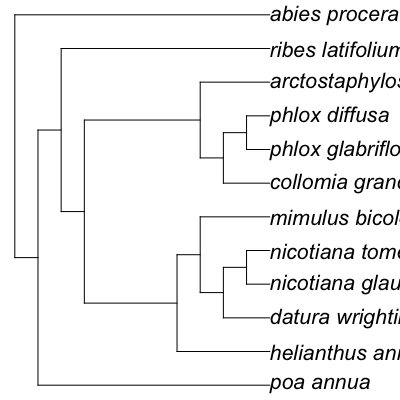

Format tree string, submit to Phylomatic, get newick tree.
Usage
phylomatic_tree(taxa, taxnames = TRUE, get = "GET", informat = "newick", method = "phylomatic", storedtree = "R20120829", taxaformat = "slashpath", outformat = "newick", clean = "true", url = "http://phylodiversity.net/phylomatic/pmws")
Arguments
- taxa
- Phylomatic format input of taxa names.
- get
- 'GET' or 'POST' format for submission to the website.
- informat
- One of newick, nexml, or cdaordf. If using a stored tree, informat should always be newick.
- method
- One of phylomatic or convert
- storedtree
- One of R20120829 (Phylomatic tree R20120829 for plants), smith2011 (Smith 2011, plants), or binindaemonds2007 (Bininda-Emonds 2007, mammals).
- taxaformat
- Only option is slashpath for now. Leave as is.
- outformat
- One of newick, nexml, or fyt.
- url
- The base URL for the Phylomatic API service, leave as is.
Value
Newick formatted tree.
Description
Format tree string, submit to Phylomatic, get newick tree.
Details
Use the web interface here http://phylodiversity.net/phylomatic/
Examples
# Getting taxonomic information from ITIS, if you already have taxonomic serial numbers (TSNs) dat_ <- laply(list("36616", "19322", "183327", "36616", "41107", "181835", "25929"), itis_phymat_format, format='isubmit')http://www.itis.gov/ITISWebService/services/ITISService/getFullHierarchyFromTSN?tsn=36616 http://www.itis.gov/ITISWebService/services/ITISService/getFullHierarchyFromTSN?tsn=19322 http://www.itis.gov/ITISWebService/services/ITISService/getFullHierarchyFromTSN?tsn=183327 http://www.itis.gov/ITISWebService/services/ITISService/getFullHierarchyFromTSN?tsn=36616 http://www.itis.gov/ITISWebService/services/ITISService/getFullHierarchyFromTSN?tsn=41107 http://www.itis.gov/ITISWebService/services/ITISService/getFullHierarchyFromTSN?tsn=181835 http://www.itis.gov/ITISWebService/services/ITISService/getFullHierarchyFromTSN?tsn=25929tree <- phylomatic_tree(taxa=taxa, get = 'POST', informat='newick', method = "phylomatic", storedtree = "R20120829", taxaformat = "slashpath", outformat = "newick", clean = "true")Error in inherits(.data, "split"): object 'taxa' not found Error in plot(tree): object 'tree' not found# Input taxonomic names taxa <- c("Poa annua", "Abies procera", "Helianthus annuus") tree <- phylomatic_tree(taxa=taxa, get = 'POST', informat='newick', method = "phylomatic", storedtree = "R20120829", taxaformat = "slashpath", outformat = "newick", clean = "true")Retrieving data for species ' Poa annua ' Retrieving data for species ' Abies procera ' Retrieving data for species ' Helianthus annuus 'http://www.itis.gov/ITISWebService/services/ITISService/getFullHierarchyFromTSN?tsn=41107 http://www.itis.gov/ITISWebService/services/ITISService/getFullHierarchyFromTSN?tsn=181835 http://www.itis.gov/ITISWebService/services/ITISService/getFullHierarchyFromTSN?tsn=36616
# Lots of names taxa <- c("Poa annua", "Abies procera", "Helianthus annuus", "Collomia grandiflora", "Ribes latifolium", "Arctostaphylos manzanita", "Phlox glabriflora", "Phlox diffusa", "Datura wrightii", "Nicotiana glauca", "Nicotiana tomentosa", "Mimulus bicolor") tree <- phylomatic_tree(taxa=taxa, get = 'POST', informat='newick', method = "phylomatic", storedtree = "R20120829", taxaformat = "slashpath", outformat = "newick", clean = "true")Retrieving data for species ' Poa annua ' Retrieving data for species ' Abies procera ' Retrieving data for species ' Helianthus annuus ' Retrieving data for species ' Collomia grandiflora ' Retrieving data for species ' Ribes latifolium ' Retrieving data for species ' Arctostaphylos manzanita ' Retrieving data for species ' Phlox glabriflora ' Retrieving data for species ' Phlox diffusa ' Retrieving data for species ' Datura wrightii ' Retrieving data for species ' Nicotiana glauca ' Retrieving data for species ' Nicotiana tomentosa ' Retrieving data for species ' Mimulus bicolor 'http://www.itis.gov/ITISWebService/services/ITISService/getFullHierarchyFromTSN?tsn=41107 http://www.itis.gov/ITISWebService/services/ITISService/getFullHierarchyFromTSN?tsn=181835 http://www.itis.gov/ITISWebService/services/ITISService/getFullHierarchyFromTSN?tsn=36616 http://www.itis.gov/ITISWebService/services/ITISService/getFullHierarchyFromTSN?tsn=31037 http://www.itis.gov/ITISWebService/services/ITISService/getFullHierarchyFromTSN?tsn=895213 http://www.itis.gov/ITISWebService/services/ITISService/getFullHierarchyFromTSN?tsn=23496 http://www.itis.gov/ITISWebService/services/ITISService/getFullHierarchyFromTSN?tsn=504315 http://www.itis.gov/ITISWebService/services/ITISService/getFullHierarchyFromTSN?tsn=30930 http://www.itis.gov/ITISWebService/services/ITISService/getFullHierarchyFromTSN?tsn=30521 http://www.itis.gov/ITISWebService/services/ITISService/getFullHierarchyFromTSN?tsn=30574 http://www.itis.gov/ITISWebService/services/ITISService/getFullHierarchyFromTSN?tsn=505846 http://www.itis.gov/ITISWebService/services/ITISService/getFullHierarchyFromTSN?tsn=33245